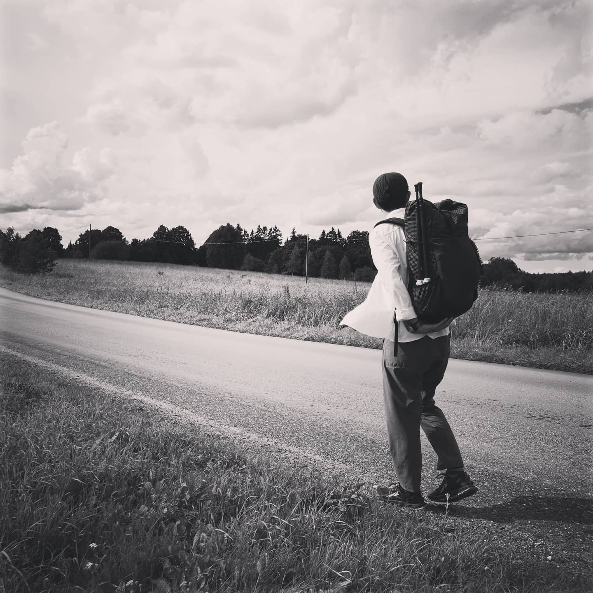
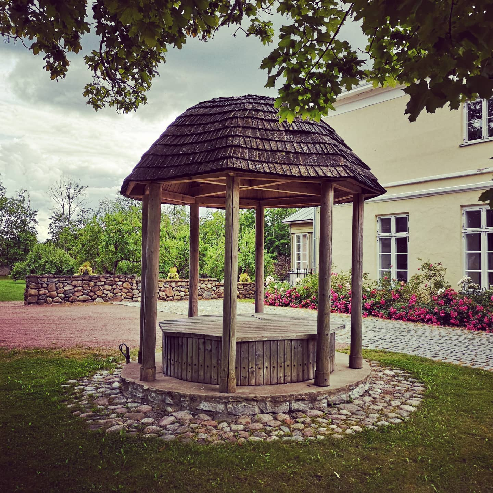
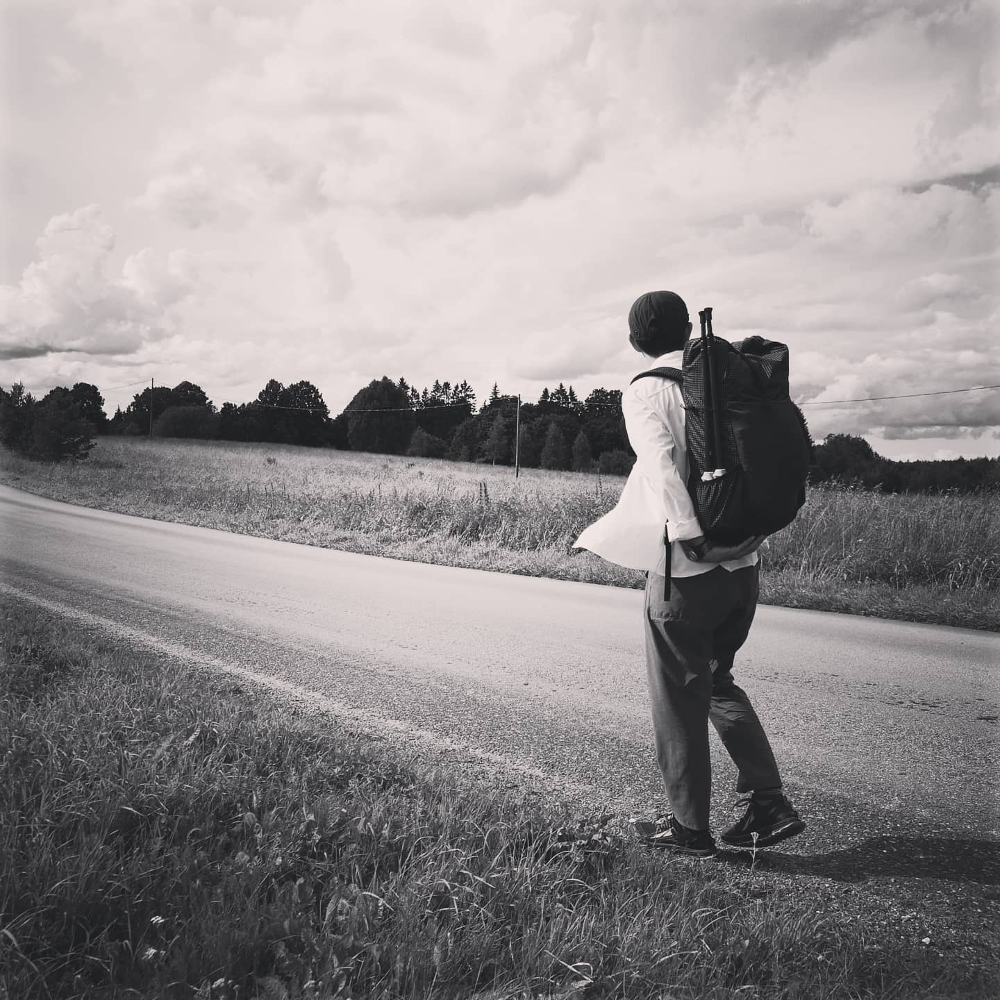
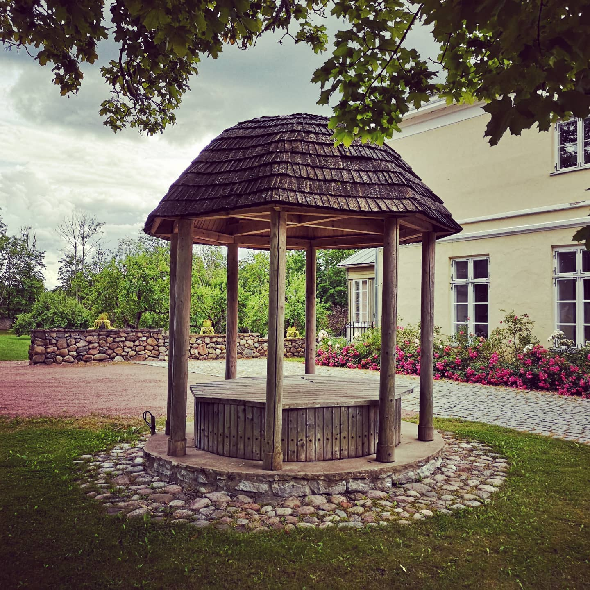
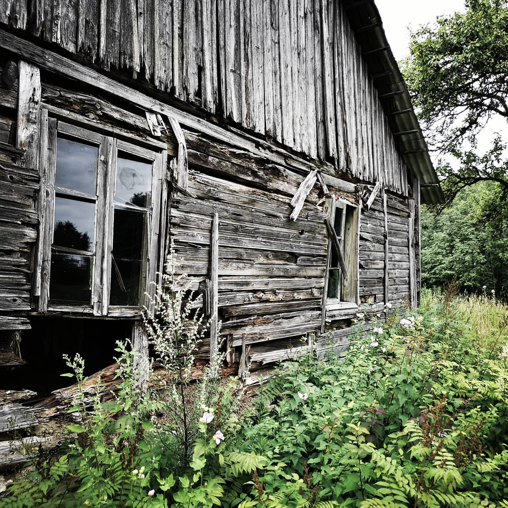
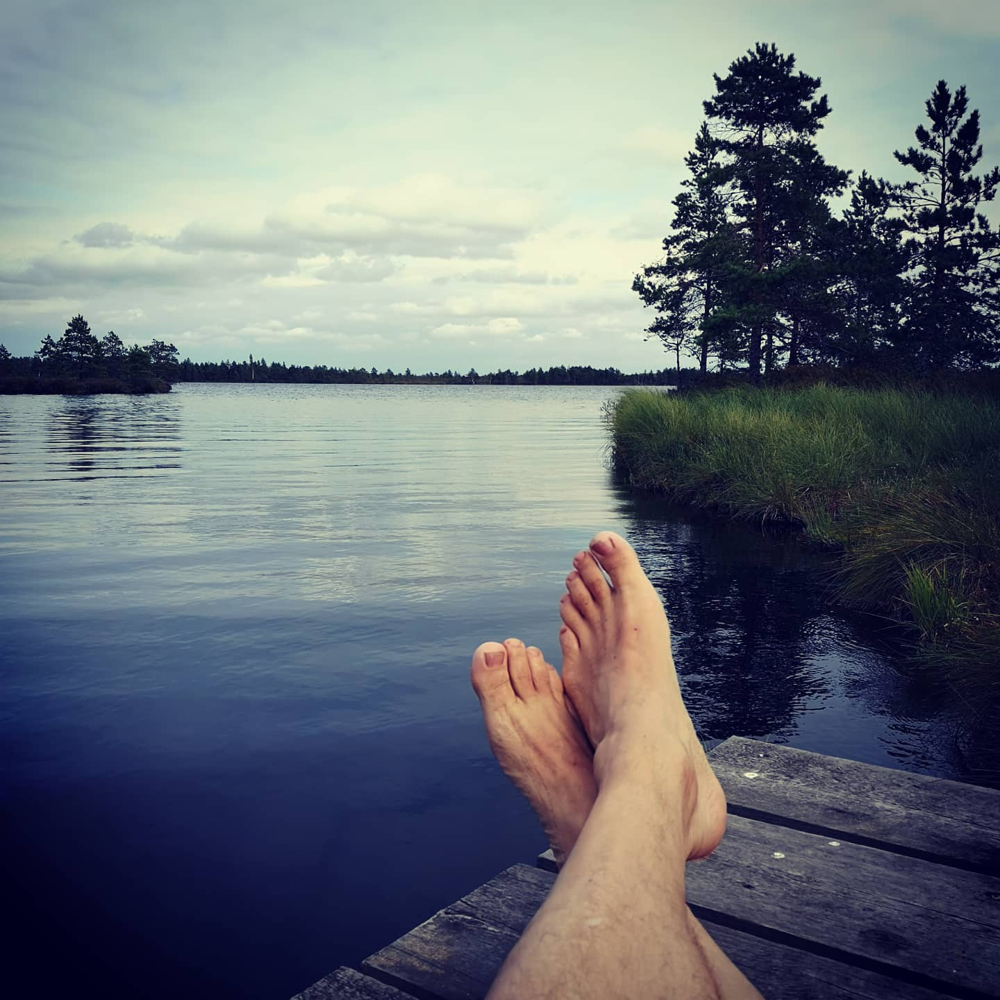
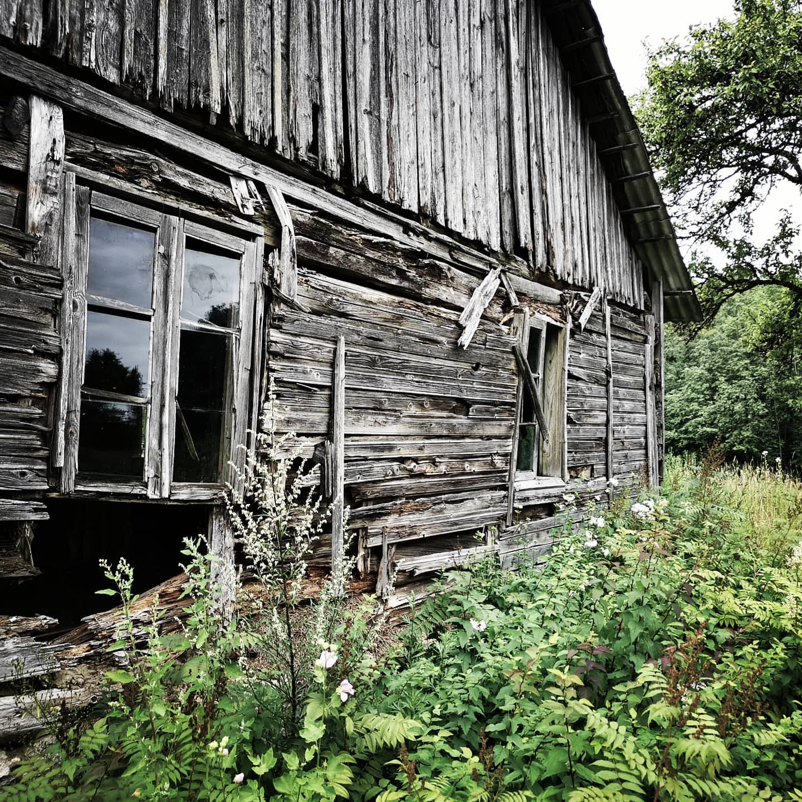
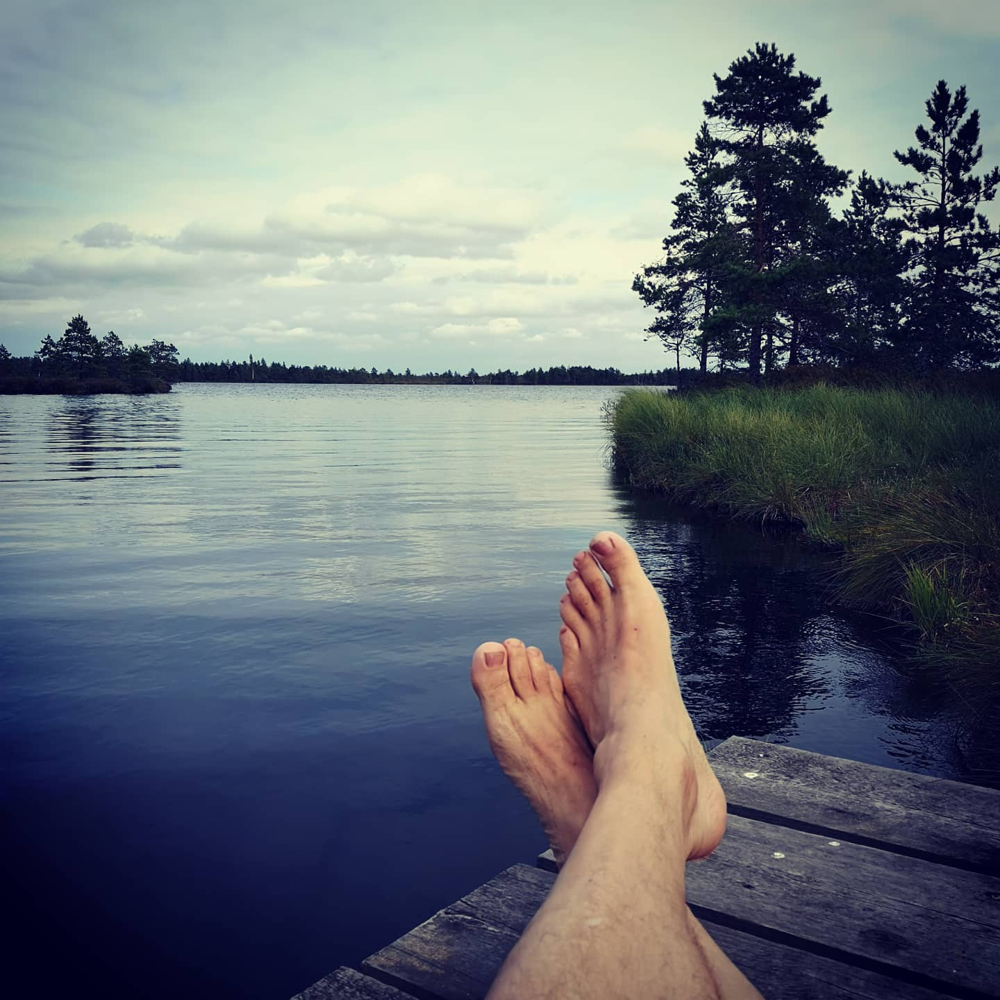

Third and unexpected part of the Estonian summer hiking...
Imported from Instagram.
Third and unexpected part of the Estonian summer hiking 2020 with @michirunagatsu. Raplamaa is a mixed bag. A lot of farms and houses in decay, sometimes ugly, sometimes romantic. A lot of bone breaking asphalt walking. But also crossing of the amazing Soosalu Raba and swimming in the lake with the same name. We've now covered the whole path between the northern coast and Soomaa. Next summer we'll finish the trail. Already looking forward. @riigimets the part through the forest that you mention as difficult on the updated description is the nicest between Ardu and Soosalu. Hikers hate asphalt, please build more paths through the nature!
#oanduiklamatkatee

 





 


